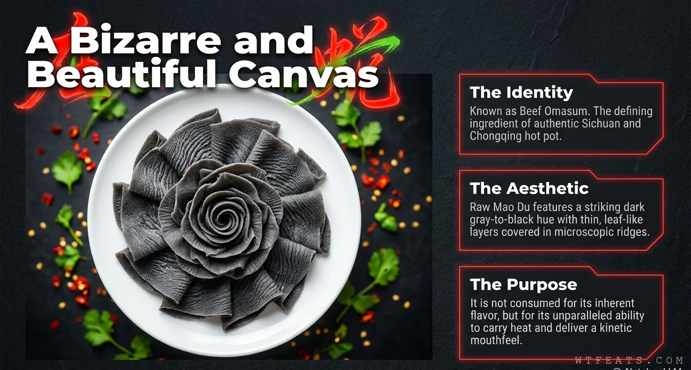

The Canvas

A bizarre and beautiful canvas.
In restaurants, fresh máo dù arrives on large white plates with the layers spread out like flower petals — dark gray to black, delicate yet firm. The plating is not vanity. Those thin, leaf-like layers, covered in tiny textured ridges, are a canvas with exactly one purpose: to catch broth. It is typically served alongside fresh vegetables, mushrooms, tofu, thinly sliced beef, and a dipping station of sesame oil and chili sauce.